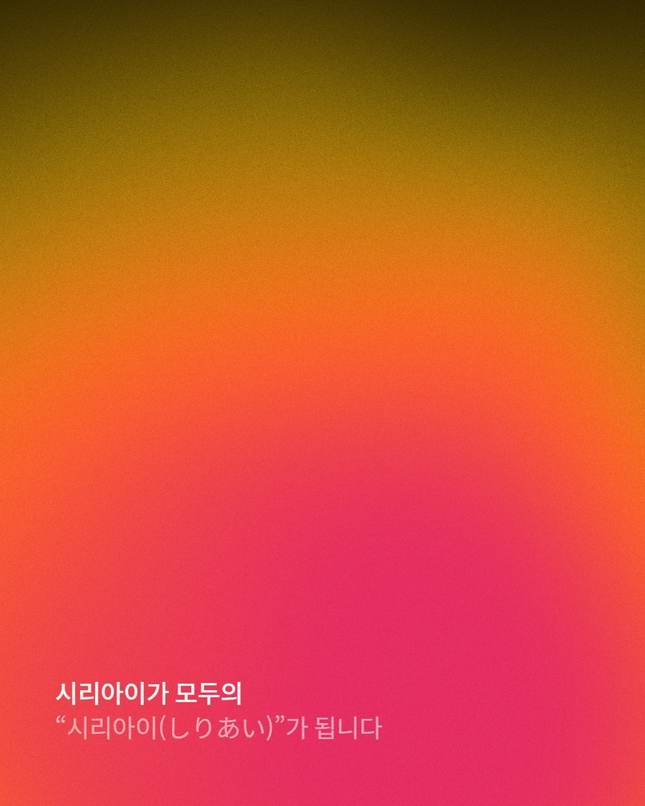

시리아이 신규 파트너 업무 안내
인플루언서 모집,
차근차근
시작해요.
캠페인에 맞는 사람을 찾고,
한 통의 DM으로 협업을 연결합니다.
intuitive contents, Siriai.

좋은 콘텐츠는 좋은 만남에서 시작됩니다.
업무의 전체 흐름
찾고, 보내고,
협업으로 연결해요.
모집 가이드
캠페인과 기준 확인
인원 수집
적합한 계정을 시트에 저장
DM 발송
제공된 양식으로 연락
상태·특이사항
발송 표시와 가벼운 응대
수량·정산
선정 인센티브 포함
수집 · 발송 · 기본 응대
안내받은 기준에 맞는 인원을 찾고 DM을 보냅니다.
회신에 응대하고 필요한 내용을 시트에 남겨주세요.
캠페인 안내 · 어려운 문의 지원
기준과 발송 문구를 전달하고, 애매한 상황을 함께 확인합니다.
최종 선정 이후의 상세 진행은 담당자가 별도로 안내합니다.
캠페인별 조건과 일정은 단톡으로 전달드립니다. 안내된 일정 안에서 편한 시간에 진행해주세요.
계정 세팅
처음 받는 DM도
알아볼 수 있도록.
부계정으로 진행해도 괜찮습니다.
전달드린 로고와 자료로 프로필을 세팅해주세요.
첨부한 시리아이 로고를 사용합니다.
The most
intuitive contents, Siriai.
프로필 구성 예시
제공 자료를 활용한 구성 예시입니다.
IG Lead Saver 1.4.0
한 번 연결하고,
버튼으로 저장해요.
PC 크롬에서 인스타그램 프로필을
진행 시트에 저장하는 도구입니다.
- 설치파일 압축 풀기
아래 설치파일을 내려받아 압축을 풀어주세요.
- 크롬에 확장프로그램 추가
chrome://extensions→ 개발자 모드 켜기
→ ‘압축해제된 확장 프로그램을 로드’ → 폴더 선택 - 설정 열기 → 연결 정보 입력
전달받은 연결 주소, 본인 이름, 캠페인 탭을 설정합니다.
‘연결 테스트’와 ‘설정 저장’ 후 인스타그램을 새로고침하세요.
설정할 항목 안내
구글시트 연결
새 구글시트나 Apps Script를 만들 필요는 없습니다.
연결 주소와 캠페인 탭은 시리아이에서 안내드립니다.
모집 가이드에 맞춰 수집하기
많이 담기보다,
맞는 사람을 찾아요.
캠페인마다 모집 조건이 다릅니다.
그때 전달드린 기준과 레퍼런스를 확인해주세요.
조건·참고 계정 확인
팔로워 구간, 콘텐츠 분야, 기존 광고 경험,
영상 완성도와 캠페인 분위기를 살펴봅니다.
참고 브랜드의 ‘태그됨’ 탐색
협업 콘텐츠에서 적합한 인원을 찾습니다.
필요하면 프로필과 실제 릴스도 확인해주세요.
‘시트에 저장’ 클릭
저장자 이름과 캠페인 탭을 확인한 뒤 저장합니다.
프로필 정보가 선택한 탭에 들어갑니다.
확장프로그램의 저장 표시
조건을 살펴보고 적합하면 저장해주세요.
같은 사람을 중복으로 담지 않습니다.
캠페인별 중복 제외 기준을 확인해주세요.
수량을 채우려고 기준을 임의로 바꾸기보다
단톡에 알려주세요. 기준 조정이나 수집을 함께 도와드립니다.
구글시트에서 대상 확인 후 발송
문구는 구간에 맞게,
발송 후에는 표시까지.
캠페인 탭 확인
안내받은 탭의 발송 대상 확인
맞는 DM 양식 선택
해당 캠페인의 팔로워·고료 기준 적용
DM 발송 후 상태 변경
발송 완료 표시, 문의·특이사항 기록
| 저장자 | 사용자명 | 팔로워 | 상태 | 비고 |
|---|---|---|---|---|
| 본인 이름 | @creator_a | 8,500 | DM 발송 ⌄ | — |
| 본인 이름 | @creator_b | 23,000 | DM 발송 ⌄ | 희망 고료 15만 원 / 조정 요청 |
| 본인 이름 | @creator_c | 12,000 | 연락전 ⌄ | — |
상태 보낸 사람은 ‘DM 발송’ 등 시트의 발송 완료 상태로 변경합니다.
비고 희망 고료와 추가 확인이 필요한 내용을 간단히 남깁니다.
DM 문구에는 기본 제안 고료가 적혀 있습니다. 고료 구간은 캠페인마다 달라질 수 있습니다.
어려운 사항은 시리아이가 서포트합니다
답할 수 있는 건 가볍게,
애매한 건 같이 확인해요.
전달받은 내용으로 안내
캠페인 설명과 DM, 지원서에 안내된 내용을 기준으로
기본적인 문의에 답변해주세요.
희망 고료 확인 → 비고에 기록
기본 제안금액과 다른 고료를 희망하면 금액을 확인해
기록하고 공유해주세요. 조정을 확정해 안내하지 않습니다.
계정과 질문을 단톡에 공유
일정·제작 조건 변경 등 추가 판단이 필요하면
단톡에서 확인 후 안내해주세요.
고료 조정 요청 응대 예시
혹시 고료 조정도 가능할까요?
함께 전달드리겠습니다 :)
최종 진행 여부는 선정 후 안내드립니다.
선정된 인원에게는 담당자가 별도로 연락합니다.
선정·방문·촬영 여부가 불분명하면 확인 후 답변해주세요.
보수와 정산
보낸 만큼 기본 보수,
선정되면 인센티브.
유효 발송 100건 × 300원
+ 최종 선정 5명 × 2,000원
금액은 세전 기준입니다. 월 1회, 계약서에 정한 기준과 지급일에 따라 정산합니다.
단순 지원이 아닌 최종 선정 인원에 대해 인센티브가 추가됩니다.
시작할 때 필요한 자료
아래에서 바로
확인해주세요.
진행 시트↗확장프로그램 설치파일↓프로필 세팅자료↓프로필 세팅 예시↗캠페인별 가이드·DM 문구·연결 주소는 별도로 안내드립니다.
공유받은 시트와 인원 정보는 업무 목적으로만 사용해주세요.